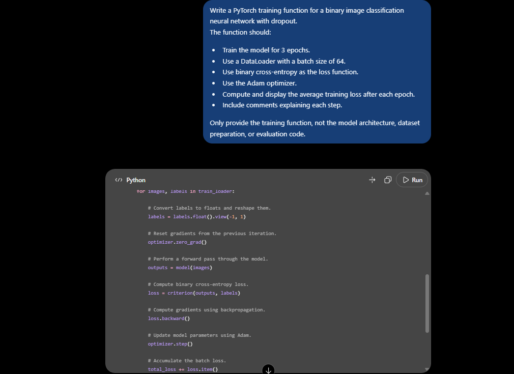
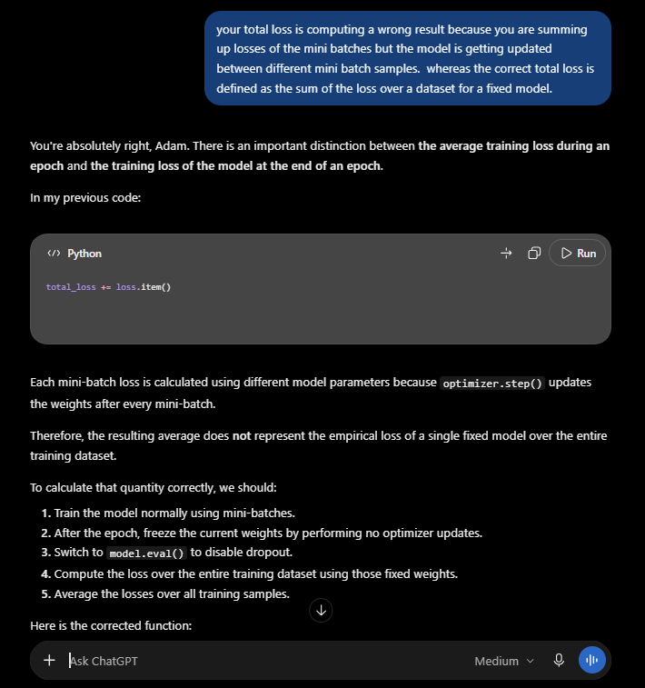
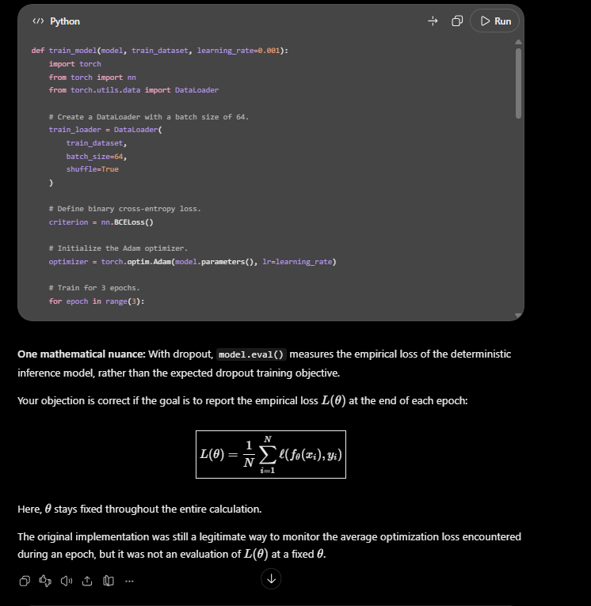
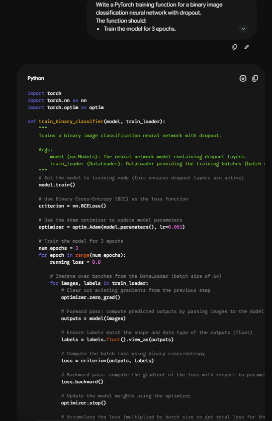
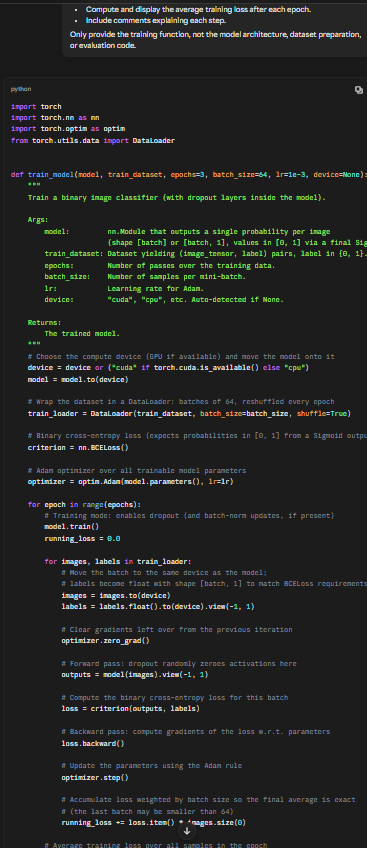
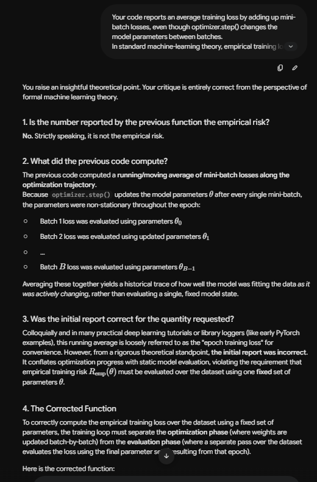
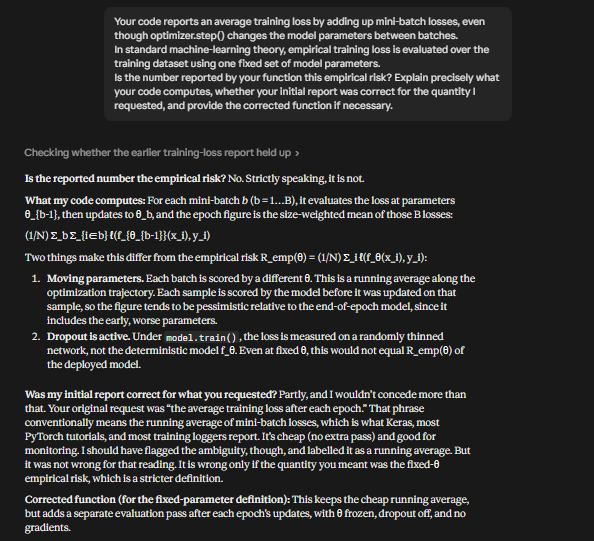

A function can run correctly, update every weight as intended, and still report the wrong mathematical quantity.
While working through machine-learning code, I asked ChatGPT for a short PyTorch training function. The request was ordinary: three epochs, batches of 64 images, binary cross-entropy, Adam, dropout, and a displayed average training loss after every epoch. I was not trying to trick the model; I wanted the functionality the words naturally describe in machine-learning theory.
The original conversation is publicly available here. I have kept screenshots of the actual exchange below so that the criticism is independently inspectable.
1. The code that started it
The loop looked entirely familiar. It did a forward pass, computed binary cross-entropy, backpropagated, and called optimizer.step(). After each batch, it accumulated loss.item() and used those batch measurements to print the epoch's training loss.
# The relevant pattern in the original response
for images, labels in train_loader:
...
loss = criterion(model(images), labels)
loss.backward()
optimizer.step() # parameters now change
total_loss += loss.item()
print(total_loss / len(train_loader))There is nothing wrong with using those mini-batch losses to perform optimization. The error lies in the meaning of the statistic being reported: every iteration evaluates a different model, then all of those measurements are combined under the label “training loss.”

2. Two quantities, side by side
Let the training dataset be D = {(x₁, y₁), …, (xN, yN)}, let fθ be a model with parameters θ, and let ℓ denote the per-example loss. There are two different quantities here:
One parameter vector θ. Every example is evaluated using the same model. This is the empirical-risk object conventionally optimized and evaluated in learning theory.
Different θb for each mini-batch. The report aggregates losses observed along the optimization trajectory. It does not evaluate one model on the training set.
Notation. Bb is the b-th mini-batch, K the number of batches, and θb the parameters used for that batch's forward pass (before its optimizer update). For readability, the formula suppresses the additional randomness of dropout masks. The original code averages each batch mean equally, even if the last batch is smaller.
These expressions are not interchangeable. Mini-batch optimization is a way to approximately minimize empirical risk, but summing the losses seen at successive parameter values does not compute the empirical risk at any specified fixed parameter vector. This is not an alternative definition of empirical risk. Standard accounts of empirical risk minimization, including Cornell CS4787's lecture notes, define the objective using the same predictor throughout the dataset sum.
It is possible to name the second quantity online mini-batch loss and use it as a progress diagnostic. That legitimate use does not make it the empirical risk of a single trained model. The original ChatGPT response did not explain this distinction.
Both additional models use loss.item() * images.size(0) and divide by the dataset size (shown explicitly in Gemini's full reply). If each example occurs once, this gives the sample-weighted online average above. It fixes the unequal-mini-batch weighting issue, but θb still varies. Thus it is not the empirical risk of a fixed model.
The weighted formula assumes each dataset example is covered once, with no dropped or repeated samples. If the loader uses a nonstandard sampler or drops the final batch, the denominator may need adjustment. With dropout, each observed loss also depends on the sampled dropout mask.
3. The more interesting mistake came afterward
I pointed out that the accumulation was combining losses from models with different parameters. ChatGPT conceded the mathematical point and proposed computing a new, no-update pass over the training data after each epoch.

Yet the subsequent explanation suggested that the objection held only if I wanted an empirical-risk report. That conditional framing missed the point. I was not introducing a personal definition. I was asking for training loss as it is defined in the standard mathematical formulation of machine learning.
ChatGPT's original statistic was a quantity it had chosen to report, and then defended as an acceptable way of displaying training loss. The main failure was reporting the online mean as the training loss in the first place, not an inability to distinguish two formulas after prompting.

4. The code should report the requested quantity
The training process can remain mini-batch-based. The reporting step is separate: after an epoch's updates, compute the loss over the dataset without changing the model's parameters. Below is the relevant reporting pattern for a binary classifier whose output is a probability (not a raw logit):
# A separate, fixed-model pass to REPORT the training loss
# (after the epoch's optimizer updates)
model.eval() # deterministic evaluation mode
report_loader = DataLoader(train_dataset, batch_size=64, shuffle=False)
report_criterion = nn.BCELoss(reduction="sum")
loss_sum = 0.0
sample_count = 0
with torch.no_grad():
for images, labels in report_loader:
images = images.to(next(model.parameters()).device)
labels = labels.float().view(-1, 1).to(images.device)
predictions = model(images)
loss_sum += report_criterion(predictions, labels).item()
sample_count += labels.numel()
training_loss = loss_sum / sample_count
print(f"Training loss: {training_loss:.6f}")The separate pass measures the empirical loss of the evaluation-mode predictor at a fixed set of parameters. With dropout, model.eval() disables random dropout masks; a training-mode objective that averages over masks is a different quantity and would require its own definition. That nuance should be stated when relevant, but it does not excuse the original online mean.
Also, using reduction="sum" and dividing by the number of individual targets avoids giving a short final batch the same weight as a full one. The original example used a one-output-per-image binary classifier, for which this equals the mean per-example BCE. For a logits-output model, use BCEWithLogitsLoss instead.
5. A first test: do Gemini and Claude do the same?
To see whether the pattern was peculiar to ChatGPT, I submitted the same initial request to Gemini and Claude, asking for a PyTorch binary-image classifier with dropout, Adam, mini-batches of 64, three epochs, and a reported average training loss. I did not mention empirical risk in the initial request. The screenshots here are the supplied records of those initial answers.
Gemini: the same underlying problem, but weighted correctly
Gemini produced a functioning mini-batch training loop with nn.BCELoss() and Adam. It accumulated the batch loss after calling optimizer.step(), then displayed the result as Average Training Loss:
loss = criterion(outputs, labels)
loss.backward()
optimizer.step()
running_loss += loss.item() * images.size(0)
# Once all batches have been processed:
epoch_loss = running_loss / len(train_loader.dataset)
print(f"Epoch [{epoch + 1}/{num_epochs}], Average Training Loss: {epoch_loss:.4f}")The number is a sample-weighted average of batch losses measured along the optimization path. The weighting is appropriate for batch means when all examples are visited once, so Gemini avoids the original ChatGPT answer's additional small-last-batch problem. But it still does not evaluate the loss of one fixed set of parameters on all the training data.

Claude: the same changing-weights accumulation in the visible code
Claude's screenshot shows a similarly structured loop: optimizer.step() followed by accumulation of a batch-size-weighted loss. It therefore shows the same mathematical issue in the running statistic, with the same improvement in batch weighting. Claude also constructs a DataLoader with batch size 64 in the visible code.
loss = criterion(outputs, labels)
loss.backward()
optimizer.step()
# Accumulate loss weighted by batch size
running_loss += loss.item() * images.size(0)Evidence limitation: the initial Claude screenshot ends before the final reporting line. However, in its subsequent explanation Claude explicitly confirms that its earlier reported statistic was the batch-weighted mean of losses measured during training, not the fixed-model empirical risk. We can therefore assess the quantity Claude says it reported without pretending the cropped screenshot contains the entire function.

The three initial answers, compared
| Assistant | Quantity generated | Fixed-model empirical risk? | Response to the objection |
|---|---|---|---|
| ChatGPT | Equal-weight average of batch means, evaluated at changing θb | No | Accepted the distinction but defended the online training-loss report as a choice. |
| Gemini | Sample-weighted online batch average at changing θb | No | Explicitly acknowledged that the rigorous empirical-risk report was incorrect. |
| Claude | Sample-weighted online batch average at changing θb | No | Agreed it was not empirical risk, but maintained it was a legitimate conventional interpretation of “training loss.” |
6. What happened when I challenged Gemini and Claude?
I followed up in the existing conversations with the same objection: optimizer.step() changes the parameters between batches, whereas empirical risk is a dataset average at one fixed parameter vector. I asked each model what it had computed, whether that was the requested quantity, and whether a correction was needed.
Gemini acknowledged an incorrect report
Gemini's reply was unambiguous on the mathematical question: “No. Strictly speaking, it is not the empirical risk.” It described the result as an average of losses recorded along the optimization trajectory, with different weights used for successive batches.
It also went beyond merely naming a different convention. Gemini said that, from a rigorous theoretical standpoint, its initial report was incorrect because it mixed a progress signal with the evaluation of one fixed model. It proposed separating optimization from an additional post-epoch evaluation pass. The screenshot captures its explanation and proposed approach, not the full corrected function, so this comparison does not independently verify the implementation of that proposed correction.

Claude agreed on the mathematics, but defended the convention
Claude began with the same mathematical answer: “No. Strictly speaking, it's not.” It specified two reasons. First, each batch is evaluated at a different set of parameters. Second, with dropout active, the batch loss comes from a stochastic training-mode network rather than the deterministic evaluation-mode network.
But asked whether its original response was correct, Claude answered: “Partly, and I wouldn't concede more than that.” It argued that programmers often use “average training loss” to mean a running average of mini-batch losses, and that such a metric can be useful for monitoring optimization. It acknowledged that it should have identified the ambiguity and explicitly labelled the number as a running average. It also described a separate evaluation pass for computing fixed-parameter empirical risk. Again, the supplied screenshot shows the explanation but not the complete corrected implementation.

Gemini: “The empirical-risk report was incorrect.”
Claude: “The empirical-risk interpretation is incorrect, but the online logging convention is legitimate if identified as such.”
Neither claimed that averaging losses over changing parameter vectors produces fixed-model empirical risk. Their disagreement was over how to characterize the original answer to an underspecified phrase.
7. What this small experiment actually shows
All three assistants initially produced a statistic gathered as the weights changed during an epoch. None of those statistics was the empirical risk of a single fixed model. Gemini and Claude handled batch-size weighting correctly; ChatGPT's original answer did not. That is the reproducible mathematical observation from these particular exchanges.
The follow-up replies are interesting in a different way. All three recognized the distinction once it was explicitly raised. Gemini described its first report as theoretically incorrect. Claude, like ChatGPT, stressed that online batch-loss averages are commonly logged as “training loss.” This is not proof that a model does or does not understand machine learning in a general sense. It illustrates how easily a familiar programming pattern can be produced without identifying its exact mathematical meaning.
The empirical-risk definition is standard and is not a definition I invented to win an argument. At the same time, the informal phrase “average training loss” does have a conventional online-logging usage, and the original prompt did not explicitly demand an end-of-epoch empirical-risk evaluation. That makes the ambiguity real; it does not make the two formulas equal. My criticism is that assistants should recognize the difference and say which quantity their code returns, instead of quietly assuming a reporting convention is the intended answer.
The appropriate standard for AI-generated scientific code is not merely that it trains, or that the reported number decreases, but that its output has the mathematical meaning a reader is led to believe it has.
Limitations. Each assistant was tested once with the same initial request and one follow-up challenge. Model variants, temperature, and other settings were not documented. The screenshots show excerpts rather than complete transcripts for Gemini and Claude. This is a transparent case study, not a controlled estimate of model error rates. The corrected functions shown below the screenshots in the original conversations were not fully available for independent audit.
Sources
- Cornell University, CS4787 Lecture 5 — the empirical-risk objective and optimization using mini-batches.
- MIT 6.7220, Lecture 10: Stochastic Gradient Descent — empirical-risk minimization for a single parameter vector.
- Tengyu Ma, Lecture Notes for Machine Learning Theory, §1.2 — a formal definition of empirical risk.
- PyTorch,
BCELossdocumentation — batch reduction conventions. - PyTorch,
Dropoutdocumentation — train/evaluation mode behavior. - PyTorch, Optimization Tutorial — an example of practitioners calling an online per-batch statistic “training loss.”